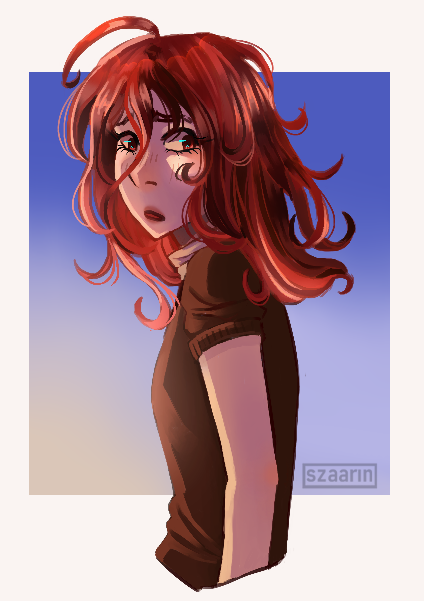
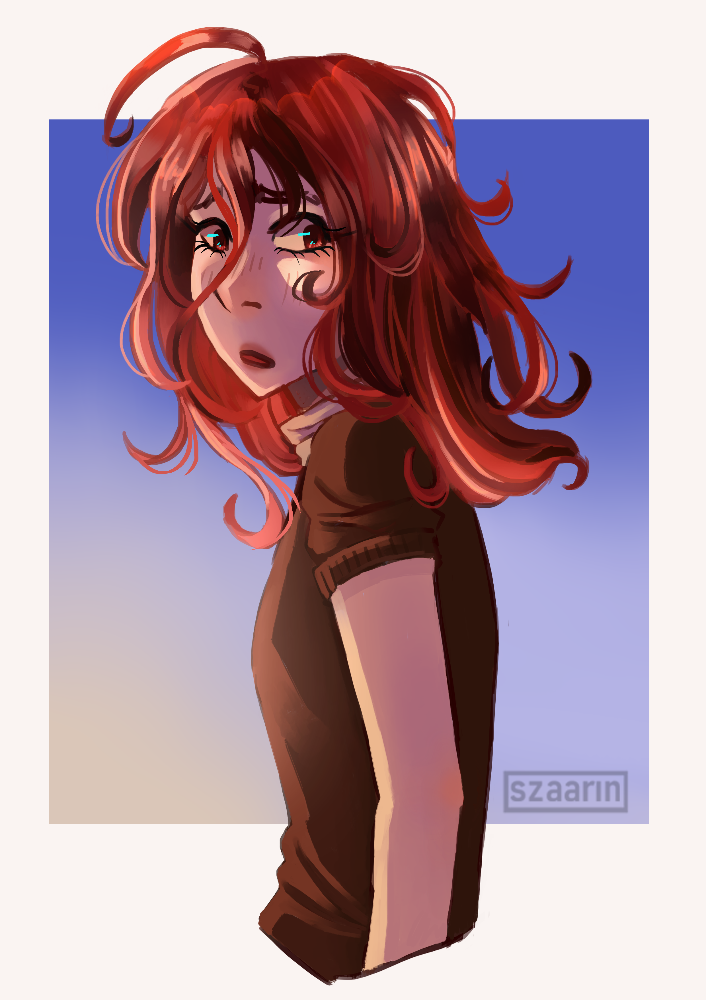

O mnie
Melania Jądrzyk
Grafik 2D, 3D, koncept artysta
Jestem studentką kierunku Game Development na uczelni Collegium Da Vinci w Poznaniu. Specjalizuję się w grafice 2D, 3D oraz projektowaniu postaci do gier komputerowych
Zapraszam do zapoznania się z moimi projektami!
Umiejętności
Biegłość pracy w programach rysunkowych takich jak Photoshop, Krita
Tworzenie modeli 3D w Blenderze
Teksturowanie w Substance Painter
Designowanie postaci do gier komputerowych
Język angielski na poziomie C1 + język branżowy
Łatwości w pracy w zespole
Projekty
Projekty Komputronik S.A.
"Pizza Slash" - październik 2025
Gra wystawiona na PGA 2025, w której przecinamy nadalatujące składniki pizzy i unikamy przecinania części komputerowych, a gracze którzy przeżyją najdłużej mogą wygrać vouchery na pizzę.
Projekt wykonany na zlecenie Komputronik
Rola: Grafiki 2D, UI, tła

Elektronik - wrzesień 2025
Gra opublikowana jako konkurs na stronie komputronika, w której gracze mogą wygrywać nagrody przewidziane przez organizatora czyli vouchery na zakupy w sklepie oraz nagroda główna - komputer.
Projekt wykonany na zlecenie Komputronik
Rola: Animacje postaci, grafiki 2D, UI


We Did It, Alice! - 2025
Link do projektu
Wcielamy się w Rotamimi - kotka, który chce pomóc tytułowej bohaterce pokonać swoje traumy. Gracz musi przejść przez cztery minigierki odpowiadające wydarzeniom z przeszłości bohaterki
Projekt stworzony podczas GameJam'u Animatora "Rotamina - chemia w nas".
Rola: Animacje postaci, Grafika 2D, UI
Gra zdobyła pierwsze miejsce w konkursie
Wyniki konkursu Animator
Sights Unseen 2024 - 2025
Link do projektu
Gracz wciela się w postać niedowidzącego karateki, który musi odnaleźć się w nowej rzeczywistości po częściowej utracie wzroku. Gra została wybrana przez wykładowców do zaprezentowania na Press Start 2025 na Collegium Da Vinci w Poznaniu
Projekt stworzony w ramach zaliczenia przedmiotu "Zarządzanie projektami"
Moje Prace
Prace 3D
Prace 2D

 
